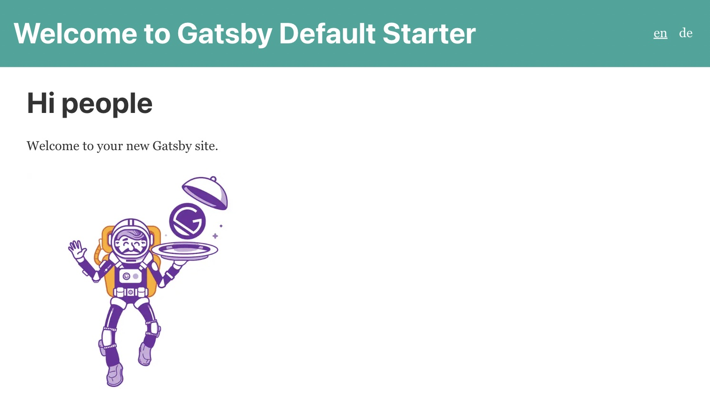
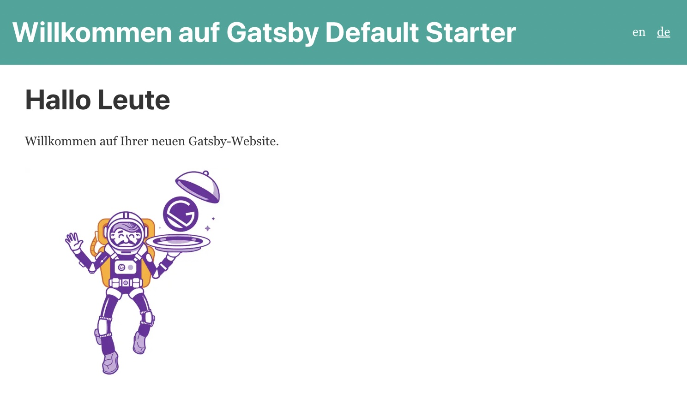
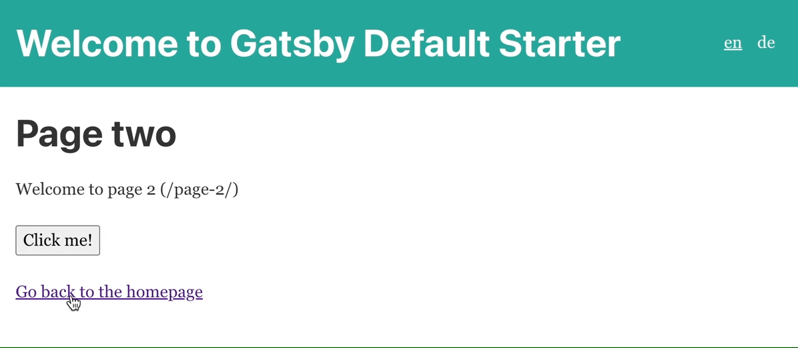
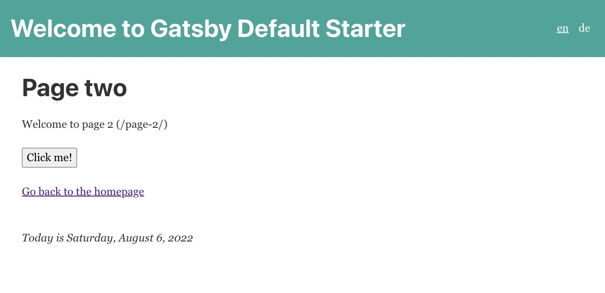
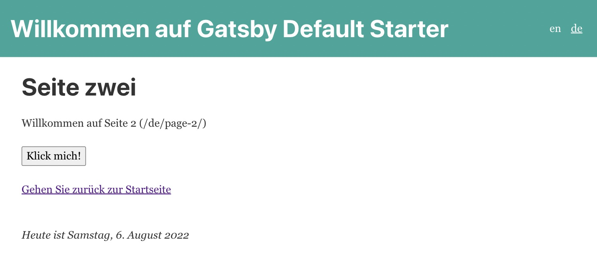
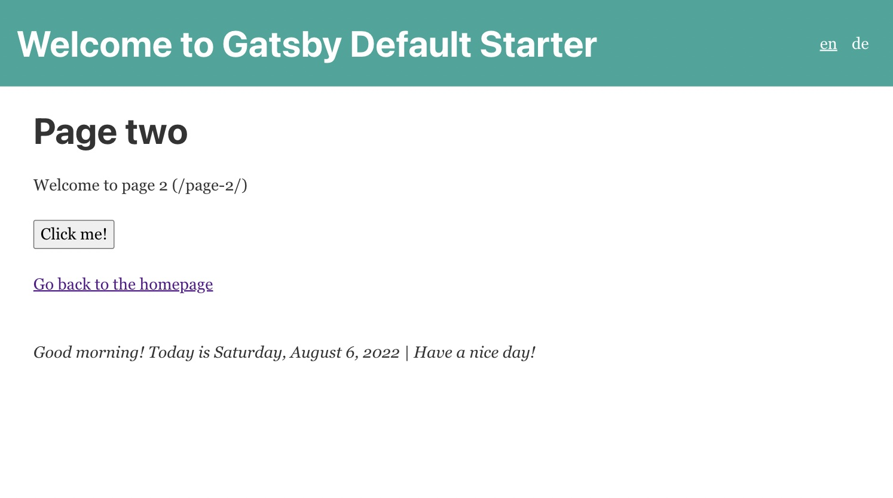
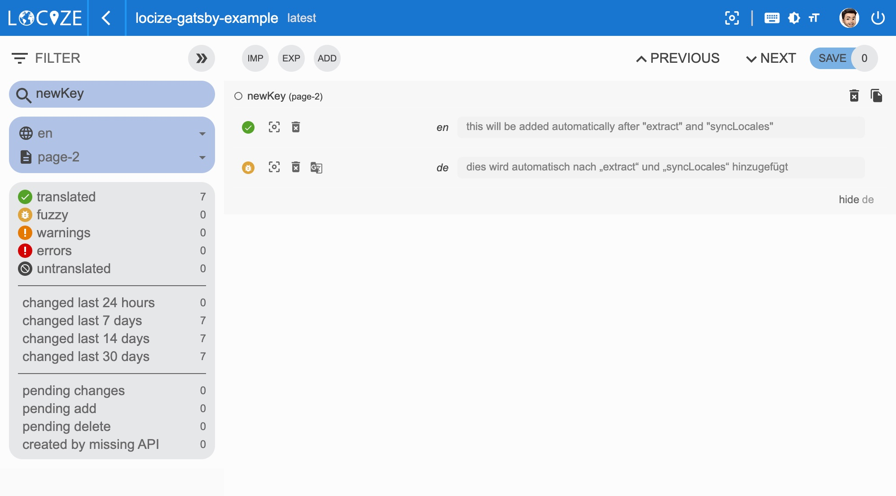
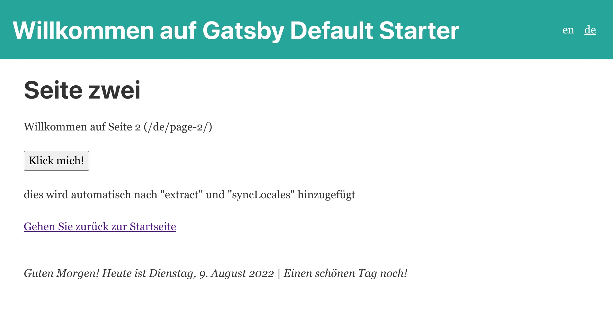
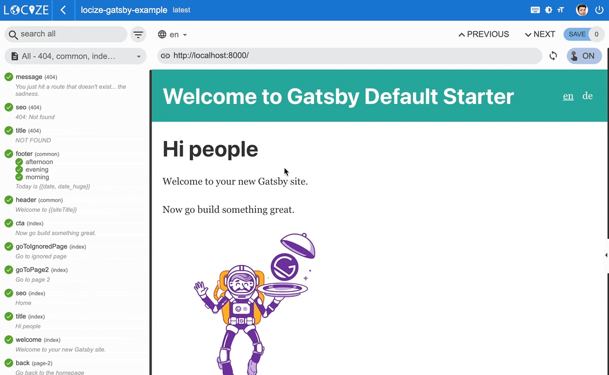

Sie kennen Gatsby, richtig? - Wenn nicht, hören Sie auf, diesen Artikel zu lesen und machen Sie etwas anderes.
Ja, Gatsby ist ein Open-Source-Framework, welches Funktionen von React, GraphQL und Webpack in einem einzigen Tool zum Erstellen statischer Websites und Apps kombiniert.
Aber wie sieht die Internationalisierung (i18n) in Gatsby aus?
Es gibt einige Plugins/Bibliotheken, die bei der Instrumentierung des Gatsby-Codes für die Internationalisierung helfen können.
In diesem Artikel verwenden wir ein Plugin, das auf dem berühmten i18n-Framework i18next bzw. seiner grossartigen Erweiterung für React.js basiert - react-i18next.
Das von uns verwendete Gatsby-Plugin ist gatsby-plugin-react-i18next, erstellt von Dmitriy Nevzorov.
Inhaltsverzeichnis
Also erstmal: "Warum i18next?"
Wenn es um React-Lokalisierung geht, ist eines der beliebtesten Frameworks i18next mit seiner React-Erweiterung react-i18next, und das aus guten Gründen:
i18next wurde Ende 2011 erstellt. Es ist älter als die meisten Bibliotheken, die Sie heutzutage verwenden, einschliesslich Ihrer wichtigsten Frontend-Technologie (React, Angular, Vue, ...).
➡️ nachhaltig
Basierend darauf, wie lange i18next bereits Open Source verfügbar ist, gibt es keinen echten i18n-Fall, der nicht mit i18next gelöst werden könnte.
➡️ reif
i18next kann in jeder Umgebung mit Javascript (und einigen Nicht-Javascript - .net, elm, iOS, Android, Ruby, ...) verwendet werden, mit jedem UI-Framework, mit jedem i18n-Format, ... die Möglichkeiten sind endlos.
➡️ erweiterbar
Es gibt viele Funktionen und Möglichkeiten, die Sie mit i18next im Vergleich zu anderen regulären 18n-Frameworks erhalten.
➡️ reich
Hier finden Sie weitere Informationen darüber, warum i18next so besonders ist und wie es funktioniert.
Fangen wir an...
Voraussetzungen
Stellen Sie sicher, dass Sie Node.js und npm installiert haben. Am besten, wenn Sie etwas Erfahrung mit einfachem HTML, JavaScript, React.js und einfachem Gatsby haben, bevor Sie zu gatsby-plugin-react-i18next. Dieses Gatsby-Lokalisierungsbeispiel ist nicht als Gatsby- oder React-Tutorial für Anfänger gedacht.
Einstieg
Nehmen Sie Ihr eigenes Gatsby-Projekt oder erstellen Sie ein neues, z. B. mit der gatsby-cli.
npx gatsby-cli new
Wir werden einen Sprachumschalter erstellen, um den Inhalt zwischen verschiedenen Sprachen zu ändern.
Lassen Sie uns einige i18next-Abhängigkeiten installieren:
npm install gatsby-plugin-react-i18next i18next react-i18next
Erstellen Sie ein locales-Verzeichnis und fügen Sie einen Unterordner für Ihre Standard-/Referenzsprache hinzu (z. B. en für Englisch).
Dort fügen wir dann unsere Namespace-Dateien hinzu, wie:
1 | |-- en |
Lassen Sie uns eine languages.js-Datei hinzufügen:
1 | const { join } = require('path') |
Importieren Sie die Datei languages.js in die Datei gatsby-config.js und konfigurieren Sie einige Plugins:
1 | const { languages, defaultLanguage } = require('./languages'); |
Beginnen wir nun mit der Instrumentierung unseres ersten internationalisierten Textes.
Da gatsby-plugin-react-i18next alle Methoden und Komponenten von react-i18next exportiert, können wir dies tun:
In einer "page"-Datei:
1 | import { Trans, useTranslation } from 'gatsby-plugin-react-i18next'; |
Definieren Sie jetzt auch eine locales/en/index.json-Namespace-Datei, wie folgt:
1 | { |
Und vielleicht auch noch eine für Deutsch?
locales/de/index.json:
1 | { |
Sprachumschalter
Um zwischen verschiedenen Sprachen wechseln zu können, benötigen wir einen Sprachumschalter:
1 | import { Link, useI18next } from 'gatsby-plugin-react-i18next'; |
Sie sollten jetzt so etwas sehen:

Standardmässig wird gatsby-plugin-react-i18next beim ersten Laden auf die defaultLanguage zurückfallen, wenn die erkannte Sprache des Browsers im languages-Array nicht verfügbar ist.
Wenn Sie im languages-Array auf eine andere Sprache zurückgreifen möchten, können Sie die Option fallbackLanguage definieren.
Jetzt sollte auch das Umschalten auf de (Deutsch) funktionieren:

🥳 Toll, Sie haben gerade Ihren ersten Sprachumschalter erstellt!
Internationalisierte Links
Lassen Sie uns eine zweite Seite erstellen ...
1 | import { graphql } from 'gatsby'; |
Ein neuer Namensraum:locales/en/page-2.json
1 | { |
locales/de/page-2.json
1 | { |
...und verweisen Sie von der ersten Seite auf diese Seite:
1 | import { Link, Trans, useTranslation } from 'gatsby-plugin-react-i18next'; |
Ein neuer Übersetzungsschlüssel für locales/en/index.json:
1 | { |
locales/de/index.json:
1 | { |
Die aus gatsby-plugin-react-i18next exportierte Link-Komponente verlinkt automatisch auf die richtige Sprache.
Die Link-Komponente ist identisch mit der Gatsby-Link-Komponente, ausser dass Sie die zusätzliche Sprach-prop bereitstellen können, um einen Link zu einer Seite mit einer anderen Sprache zu erstellen.
Interpolation und Pluralisierung
i18next geht über die Bereitstellung der standardmässigen i18n-Funktionen hinaus. Aber sicher ist es in der Lage, Plurale und Interpolation zu verarbeiten.
Zählen wir jedes Mal, wenn auf eine Schaltfläche geklickt wird:
1 | import { graphql } from 'gatsby'; |
...und erweitern die Übersetzungsressourcen:locales/en/page-2.json
1 | { |
locales/de/page-2.json
1 | { |
Basierend auf dem Zählwert wählt i18next die korrekte Pluralform aus.
i18next bietet auch die Möglichkeit, eine spezielle Übersetzung für {count: 0} zu haben, sodass eine natürlichere Sprache verwendet werden kann. Wenn der count Wert 0 ist und ein _zero-Eintrag vorhanden ist, dann wird er anstelle des Plural-Suffix der regulären Sprache (_other) verwendet.
Lesen Sie mehr über Pluralisierung und Interpolation in der offiziellen i18next-Dokumentation.

💡 i18next ist auch in der Lage, Sprachen mit mehreren Pluralformen zu verarbeiten, wie Arabisch:
1 | // translation resources: |
Warum funktionieren meine Pluralformen nicht?
Sehen Sie diese Warnung in der Entwicklungskonsole (debug: true)?
i18next::pluralResolver: Your environment seems not to be Intl API compatible, use an Intl.PluralRules polyfill. Will fallback to the compatibilityJSON v3 format handling.
Mit v21 hat i18next das Suffix mit dem in der Intl API. In Umgebungen, in denen die API Intl.PluralRules nicht verfügbar ist (wie bei älteren Android-Geräten), müssen Sie möglicherweise zu polyfill die Intl.PluralRules-API. Falls es nicht verfügbar ist, wird auf die Pluralbehandlung von i18next JSON format v3 zurückgegriffen. Und wenn Ihr json bereits die neuen Suffixe verwendet, werden Ihre Pluralschlüssel wahrscheinlich nicht angezeigt.
tldr;
npm install intl-pluralrules
1 | import 'intl-pluralrules' |
Formatierung
Sehen wir uns nun an, wie wir verschiedene Datumsformate mit Hilfe von i18next und Luxon verwenden können, um das Datum zu verarbeiten und Zeit.
npm install luxon
Wir möchten eine Fusszeile haben, die das aktuelle Datum anzeigt:
1 | import React from 'react'; |
Importieren Sie Luxon und definieren Sie eine Formatfunktion, wie in der Dokumentation dokumentiert, und fügen Sie den neuen Übersetzungsschlüssel hinzu:
locales/en/common.json
1 | { |
locales/de/common.json
1 | { |
😎 Cool, jetzt haben wir eine sprachspezifische Datumsformatierung!
Englisch: 
Deutsch: 
Kontext
Was ist mit einer bestimmten Begrüssungsnachricht basierend auf der aktuellen Tageszeit? also morgens, abends usw. Dies ist dank der Funktion context von i18next möglich.
Lassen Sie uns eine getGreetingTime-Funktion erstellen und das Ergebnis als Kontextinformationen für unsere Fusszeilenübersetzung verwenden:
1 | import React from 'react'; |
Und fügen Sie einige kontextspezifische Übersetzungsschlüssel hinzu:
locales/en/common.json
1 | { |
locales/de/common.json
1 | { |
😁 Ja, es funktioniert!

Schlüsselextraktion
Dank babel-plugin-i18next-extract können Sie automatisch Übersetzungen innerhalb der t-Funktion und der Trans-Komponente aus Ihren Seiten extrahieren und in den Namespace-Dateien speichern.
Es funktioniert so:
Installieren Sie zuerst die erforderlichen Abhängigkeiten:
npm install @babel/cli @babel/plugin-transform-typescript babel-plugin-i18next-extract
Erstellen oder aktualisieren Sie die Datei babel-extract.config.js (nennen Sie sie NICHT babel.config.js, sonst wird sie von Gatsby verwendet):
1 | const { defaultLanguage } = require('./languages'); |
Fügen Sie Ihrer package.json ein Skript hinzu:
1 | "scripts": { |
Wenn Sie Übersetzungen pro Seite für einen bestimmten Namensraum extrahieren möchten, können Sie am Anfang der Seite einen speziellen Kommentar hinzufügen:
1 | // i18next-extract-mark-ns-start index |
zu Info: Es gibt auch andere Kommentarhinweise, die Sie verwenden können.
Alle Ihre Seiten vorbereitet? Schön, also versuchen wir das:
1 | // i18next-extract-mark-ns-start index |
Das Ausführen von npm run extract fügt nun diesen neuen cta-Schlüssel zur Namespace-Datei hinzu:
1 | { |
Extra-Power
Das ist alles schon toll, aber wir können noch mehr!
Schön wäre eine Übersicht, welche Übersetzungen fehlen und welche Dateien komplett übersetzt sind...
Und was, wenn Sie neue Schlüssel extrahiert haben, und dieser würde automatisch übersetzt werden?
Um dies wahr werden zu lassen, benötigen wir ein Übersetzungsmanagement-System...
Indem Sie die Übersetzungen an einige Übersetzer oder Übersetzungsagenturen senden, haben Sie mehr Kontrolle und einen direkten Kontakt mit ihnen. Das bedeutet aber auch mehr Arbeit für Sie. Dies ist ein traditioneller Weg. Beachten Sie jedoch, dass das Versenden von Dateien immer einen Overhead verursacht.
Gibt es eine bessere Option?
Auf jeden Fall!
i18next hilft dabei, die Anwendung zu übersetzen, und das ist grossartig – aber es steckt noch mehr dahinter.
- Wie integrieren Sie eventuelle Übersetzungsdienste/-agenturen?
- Wie behalten Sie den Überblick über neue oder entfernte Inhalte?
- Wie gehen Sie mit der richtigen Versionierung um?
- und vieles mehr...
Suche Sie nach sowas❓
- Einfach zu integrieren
- Kontinuierliche Bereitstellung? Kontinuierliche Lokalisierung!
- Einfache Verwaltung der Übersetzungsdateien
- Professionelle Übersetzungen bestellen
- Analytik & Statistik
- Versionierung Ihrer Übersetzungen
- Automatische und maschinelle Übersetzung auf Abruf
- Risikofrei: Nehmen Sie Ihre Daten mit
- Transparente und faire Preisgestaltung
- und vieles mehr...

Wie sieht das aus?
Zuerst müssen Sie sich bei locize registrieren und anmelden. Dann erstellen Sie ein neues Projekt in locize und fügen Ihre Übersetzungen hinzu. Sie können Ihre Übersetzungen entweder über die CLI oder durch Importieren der einzelnen json-Dateien oder über die API bewerkstelligen.
Lassen Sie uns nun die locize-cli installieren:
npm install -g locize-cli
Wir bereiten ein neues Skript vor, das unsere lokalen Änderungen mit locize synchronisiert. Und auch ein optionales zweites Skript, das nur die neuesten Übersetzungen von locize herunterlädt. Stellen Sie sicher, dass Sie Ihre Projekt-ID und Ihren API-Schlüssel verwenden:
1 | "scripts": { |
Verwenden Sie das Skript npm run syncLocales, um Ihr lokales Repository mit dem zu synchronisieren, was auf locize veröffentlicht wurde.
Alternativ können Sie auch das Skript npm run downloadLocales verwenden, um die veröffentlichten Lokalisierungsübersetzungen immer in Ihr lokales Repository herunterzuladen, bevor Sie Ihre App bündeln.
Wenn wir jetzt einen neuen Übersetzungsschlüssel hinzufügen, etwa so:
1 | <Trans i18nKey="newKey">this will be added automatically after "extract" and "syncLocales"</Trans> |
und anschliessend npm run export und dann npm run syncLocales ausführen, erhalten wir Folgendes:
locales/en/page-2.json:
1 | { |
locales/de/page-2.json:
1 | { |

Dank der optional aktivierten automatische maschinelle Übersetzung Option werden während der Entwicklung der App nicht nur neue Schlüssel zu locize hinzugefügt, sondern auch automatisch mittels maschineller Übersetzung in die Zielsprachen übersetzt.

👀 aber es gibt noch mehr... (In-Kontext-Editor)
Mit Hilfe des Plugins locize können Sie Ihre App im locize InContext Editor verwenden.
Neugierig zu sehen, wie das aussieht?
Ok, installieren Sie zuerst die locize-Abhängigkeit:
npm install locize
Fügen Sie dann im Code (wir wählen unsere Datei layout.js aus) Folgendes hinzu:
1 | import React from 'react'; |
Und in der gatsby-config.js fügen Sie einige neue React-Optionen hinzu:
1 | const { languages, defaultLanguage } = require('./languages'); |
Gehen Sie dann zu Ihrem Locize-Projekt und definieren Sie Ihre Kontext-Editor-URLs, wie hier beschrieben.
Das Ergebnis wird wie folgt aussehen: 
Ist das nicht toll?
🧑💻 Den vollständigen Code finden Sie hier.
Wenn Sie mehr Grundlagen über i18next erfahren möchten, gibt es auch ein i18next-Crashkurs-Video.
🎉🥳 Herzlichen Glückwunsch 🎊🎁
Ich hoffe, Sie haben ein paar neue Dinge über gatsby-plugin-react-i18next, i18next, React.js-Lokalisierung und moderne Lokalisierungs-Workflows gelernt.
Wenn Sie also Ihr i18n-Thema auf die nächste Ebene bringen möchten, lohnt es sich, die Übersetzungs-Management Platform - locize auszuprobieren.
Die Gründer von locize sind auch die Schöpfer von i18next. Mit der Nutzung von locize unterstützen Sie also direkt die Zukunft von i18next.